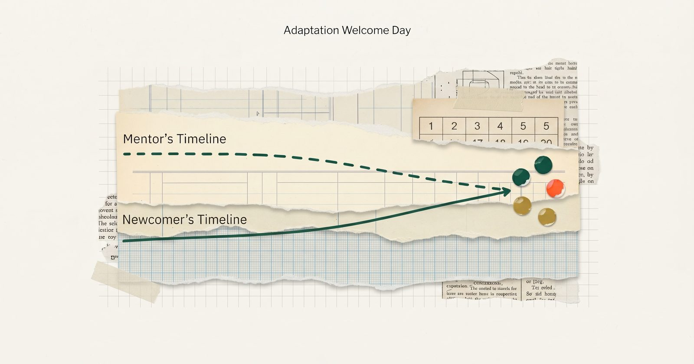
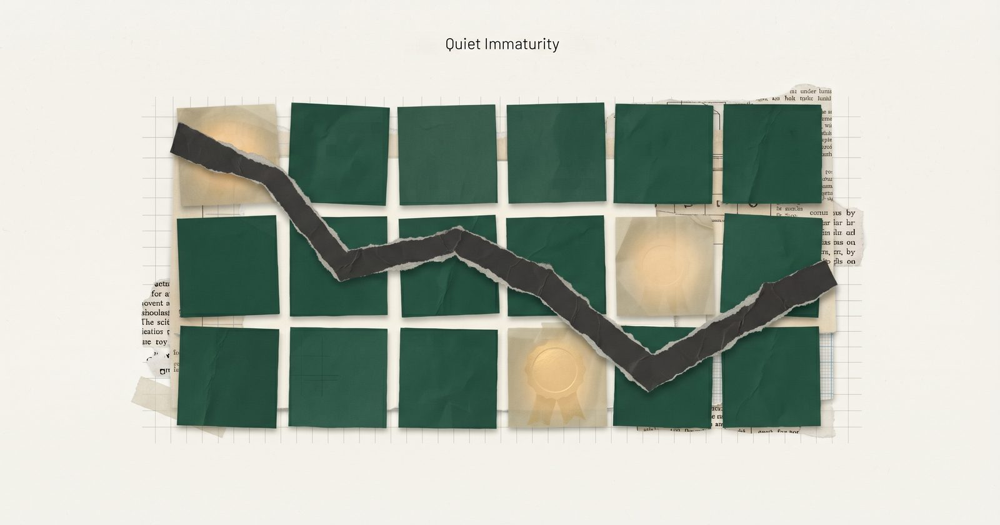
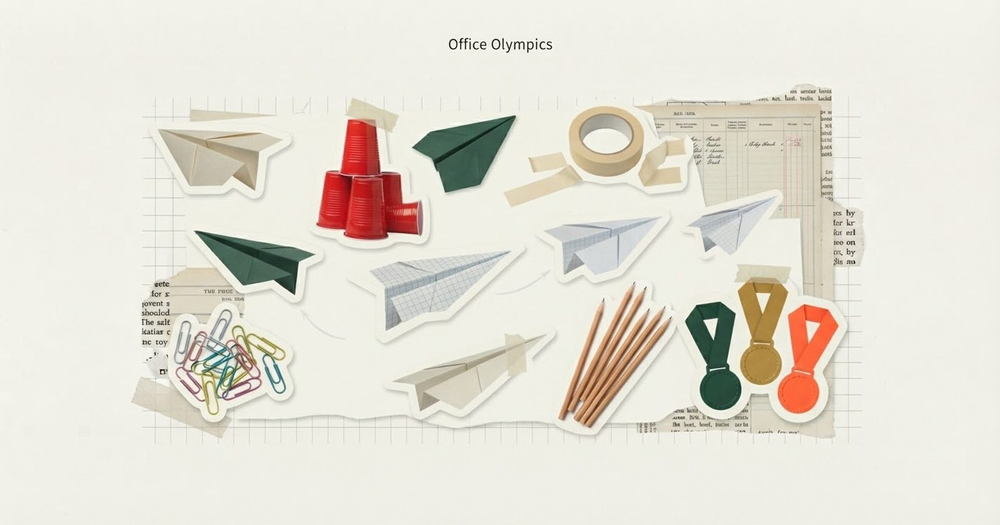

Все кейсы: практика, а не теория
15 кейсов из практики T&D, внутренних коммуникаций, культуры и событий. Названия компаний, имена, данные и цифры изменены; материалов под NDA нет.

Модульная программа обучения отдела продаж
Скрипты превратились в живые диалоги, которые ведут клиента к следующему шагу.
Смотреть кейс →
Аудит управленческой культуры
Вместо «плохих сотрудников» — карта системных ограничителей и план развития руководителей.
Смотреть кейс →
Наставник в графике новичка
Новички доходят до реальной работы и выходят на самостоятельность за 3 недели.
Смотреть кейс →
Архитектура признания и геймификации
Признание не дублирует зарплату, а работает на вовлечённость и удержание.
Смотреть кейс →
Тихая незрелость: цена избегания обратной связи
Склад упал с 3-го на 18-е место из 18 за 3–4 недели — цена тихой незрелости руководителя.
Смотреть кейс →
Офисные Олимпийские Игры
Эмоциональная разгрузка распределённых команд без бюджета и «шариков-фонариков».
Смотреть кейс →Тень руководителя
Субъективное «сотрудник плохой» превращается в проверяемые критерии работы РОПа.
Смотреть кейс →Управление в наставническом стиле
Руководители переходят от контроля к развитию людей — без потери результата.
Смотреть кейс →Нейробиология управления
Что делать, когда команда ушла в защиту: физиология стресса вместо «мотивирующих бесед».
Смотреть кейс →Стандарт деловой переписки
Меньше потерь контекста и ошибок в сделках — единый стандарт письма и договорённостей.
Смотреть кейс →Сообщество амбассадоров
Внутренние проекты без разнарядки: прозрачный вход и опора на заслуги.
Смотреть кейс →Пирамида Минто в коммуникациях
Сотрудники говорят на языке сути и перестают бояться сложных ситуаций.
Смотреть кейс →Обучающие презентации
Методология и цифры превращаются в понятные визуальные истории, а не «просто красиво».
Смотреть кейс →Олимпийские игры: 10 дисциплин
Готовый комплект дисциплин из подручных средств — вау-эффект без дорогих агентств.
Смотреть кейс →Нестандартный тимбилдинг
Общий результат из фрагментов: сплочение руководителей и команд через живой опыт.
Смотреть кейс →Демо-кейсы обезличены. Если нужен разбор под конкретную задачу — напишите.